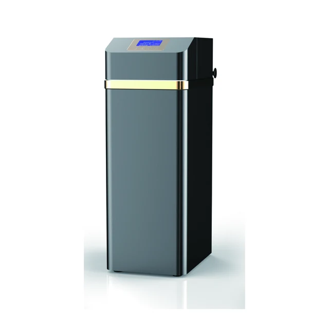

Smart RO Water Purifier 400G-1200G
Smart RO Water Purifier 400G-1200G — Application: Under-sink or countertop installation.
Send InquiryBrowse Yuchen Water instant heating water dispensers, water filtration systems and replacement filter cartridges. Every card links directly to an individual product page for OEM, distributor and replacement-filter sourcing.
Start with seven cabinet series, then compare 21 exact models by source-listed flow, activated-carbon or resin volume, FRP tank size and enclosure dimensions.

Explore commercial RO dispensers, standalone purifiers and vending-ready systems for OEM/ODM projects.

Use the collection selector to browse all products together or focus on the established Yuchen Water range and the OEM water dispenser and filter cartridge collection. Product links are present in the page HTML for reliable crawling and direct access.
This catalog is organized for importers comparing water filtration products supplier options, private label water filter programs, RO water purifier systems, PP sediment cartridges, carbon filters, dispenser platforms and filter housings. Use the category filters to move from broad sourcing terms to model-specific quotation details.
Browse 21 source-reviewed YC models across two automatic-filter series and five automatic-softener series.
PP melt blown sediment cartridges from Yuchen Water can be quoted with custom micron rating, length, end cap, label and packaging for international distributors.
OEM CTO coconut shell carbon block cartridges help reduce chlorine, taste and odor, with China factory support for size, micron, label and packaging details.
GAC and UDF activated carbon filter cartridges for RO systems, dispensers and water purifiers. OEM media, shell, label and packaging support.
T33 inline carbon filters for RO post-filtration, water dispensers and direct drinking systems. OEM quick-connect fittings, media, label and cartons.
Reverse osmosis membrane elements for residential and light commercial RO systems. OEM GPD rating, sleeve label, bag and carton options.
UF hollow fiber membrane filters for gravity purifiers, dispensers and kitchen systems. Custom housing, connector, flow and private label options.
Wall mounted, desktop and vertical dispenser models can be matched with OEM shell color, filter set, panel, badge and carton support.
OEM/ODM RO water purifiers including built-in tank and under-sink systems. Custom stages, membrane, front panel, filters, faucet and packaging.
PP, Big Blue and 304 stainless steel housings can be customized by port size, color, bracket, label and export packaging; 316L is available for custom projects.
Browse filter cartridges, membrane elements, water purification systems, housings and dispenser products in the established Yuchen Water range.
Smart RO Water Purifier 400G-1200G — Application: Under-sink or countertop installation.
Send Inquiry
Commercial Small-Cabinet RO Water Purifier 400G-1600G — Pure Water Flow: 400G-1600G.
Send Inquiry
Large Industrial Reverse Osmosis Water Treatment Equipment 3-100 TPH — Pure Water Flow: 3-100 t/h.
Send Inquiry
Dual-Tank Pretreatment Integrated Skid RO Equipment 1000-3000 L/h — Pure Water Flow: 1000-3000 L/h.
Send Inquiry
Three-Tank Pretreatment Integrated Skid RO Equipment 1000-3000 L/h — Pure Water Flow: 1000-3000 L/h.
Send Inquiry
Dual-Tank Pretreatment Reverse Osmosis Equipment 250-1000 L/h — Application: Hotels, workshops, schools, clinics, commercial kitchens, groundwater pretreatment and compact water purification projects.
Send Inquiry
Six-Housing Reverse Osmosis Equipment with Pure Water Tank 250-1000 L/h — Treatment Process: 20″ PP + 20″ CTO + 20″ PP + RO.
Send Inquiry
Single-Tank Pretreatment Reverse Osmosis Water Purification Equipment 250-500 L/h — Treatment Process: Automatic sand-carbon tank + 20-inch PP + 20-inch PP + RO.
Send Inquiry
Single-Tank 20-Inch Big Blue PP Reverse Osmosis Water Purification Equipment 250-500 L/h — Treatment Process: 20-inch Big Blue PP prefilter + RO.
Send Inquiry
Slim Reverse Osmosis Water Purification Equipment 250-500 L/h — Treatment Process: PP cotton filter cartridge + activated carbon cartridge + RO.
Send Inquiry
Alkaline Water Purifier System — Type: Alkaline; pH range: 8.5 - 9.5.
Send Inquiry
20-Inch Three-Stage Big Blue Water Filter System — Filtration stages: 3.
Send Inquiry
CTO Coconut Shell Carbon Block Filter — Length: 10 inch / 20 inch / custom.
Send Inquiry
Compressed Activated CTO Carbon Block — Application: Taste, odor and chlorine-related filtration; compound-specific claims require matching test documentation..
Send Inquiry
Industrial High-Flow CTO Carbon Block Filter — Industry: Industrial.
Send Inquiry

Multi-Stage Filter Cartridge Combination — Combination: Custom.
Send Inquiry
10- and 20-Inch Water Filter Housings for Replacement Cartridges — Connections: 1/4″ / 1/2″ / 3/4″ / 1″.
Send Inquiry
Maifan Stone Inline Filter Inline Maifan — Function: Mineralization.
Send Inquiry
Medium Size Water Filter w/ Copper Connector — Connector: Copper.
Send Inquiry
Commercial Stainless Steel RO Water Dispenser E900-K27 — Size: 800 x 480 x 1520 mm; Hot tank: 27L.
Send Inquiry
E600-S Commercial RO Water Dispenser — Available With or Without a Payment System — Cabinet Material: Galvanized steel and tempered glass.
Send Inquiry
E600-S-Min Commercial RO Water Dispenser — Purified water flow: 0.26 L/min or 1.05 L/min by RO configuration.
Send Inquiry
1000W Vertical Water Dispenser MT-DV-E600 — Display: LED Digital.
Send Inquiry
Desktop RO Water Machine with Compressor Cooling 100G — Treatment Process: Four-stage filtration: PP + CTO + T33 + RO, with 100G RO capacity.
Send Inquiry
Vertical Water Dispenser MT-E600 — Filtration: PP, CTO, GAC, UF or RO module options.
Send Inquiry
Vertical Water Dispenser MT-V-E300A — Color: Black/White.
Send Inquiry
PP Melt Blown Filter with Fin End Cap — End Cap: Fin Type.
Send Inquiry
PP Melt Blown Filter with Silicon Ring — Ring: Food-grade Silicon.
Send Inquiry
Industrial PP Melt Blown Sediment Filter (SOE/DOE) — Industry: Industrial.
Send Inquiry
PP Melt Blown Sediment Filter Cartridge — Length: 10 inch, 20 inch, 30 inch, 40 inch on request.
Send Inquiry

RO Membrane Element — Function: TDS, salts and heavy metal reduction.
Send Inquiry
400GPD High-Flow Reverse Osmosis (RO) Membrane Element — Type: Dry Membrane.
Send Inquiry
Under-Sink Reverse Osmosis Water Filter — Membrane: RO 75GPD.
Send Inquiry
SUS 304 Stainless Steel Jumbo Water Filter Housing for 10- and 20-Inch Cartridges — Pressure gauge: Optional pressure gauge.
Send Inquiry
Ultrafiltration (UF) Cartridge — Membrane: Hollow Fiber; Filtration: 0.01μm.
Send Inquiry
UF Hollow Fiber Filter — Function: Colloid, turbidity and microorganism reduction.
Send Inquiry
Ultra Film Filter Cartridge — Type: Ultra Film; Filtration: 0.01μm.
Send Inquiry
Three Stage Plus UV Water Purifier — Sterilization: UV-C.
Send Inquiry
Maifan Stone Mineralizing Purifier — Mineral: Maifan Stone; Stages: 5-Stage.
Send Inquiry
Commercial Big Blue RO Water Purifier 400G-800G — Treatment Process: 10-inch Big Blue PP prefilter + RO + T33.
Send Inquiry
10-Inch Frame RO Water Machine 400G-1200G — Pure Water Flow: 400G-1200G.
Send Inquiry
Product Type: Thickened Stainless Steel 10-Inch Frame RO Water Machine 400G-800G.
Send Inquiry
Product Type: 10-Inch Frame RO Water Machine 400G-800G.
Send Inquiry
Product Type: Front Panel 10-Inch Frame RO Water Machine 400G-800G.
Send Inquiry
20-Inch Frame RO Water Machine 400G-1200G — Pure Water Flow: 400G-1200G.
Send Inquiry
Pump-Free Five-Stage RO Water Purifier — A non-electric five-stage reverse osmosis unit for markets with stable municipal inlet pressure.
Send Inquiry
20-inch Commercial RO Water Purifier 800G/1200G/1600G/2000G — Filtration Stages: Five-stage filtration with PP sediment, pre-carbon, RO membrane, post carbon or custom cartridge sequence.
Send Inquiry
Built-In Pressure Tank RO Water Purifier 100G/200G — Storage tank: Built-in pressure tank.
Send Inquiry
Commercial Central RO Water Purification Equipment 250-500 L/h — Treatment Process: 20-inch PP + 20-inch CTO + 20-inch PP + RO.
Send Inquiry
Commercial High-Flow Deluxe Big Blue RO Water Purifier 800G-1600G — Treatment Process: 10-inch large-diameter PP + 10-inch large-diameter cotton-carbon composite filter + RO×2.
Send Inquiry
Commercial Mid-Cabinet RO Water Purifier with Built-In Pressure Tank 400G-1600G — Pure Water Flow: 400G-1600G.
Send Inquiry
Custom 5/6/7 Stage RO Water Purifier OEM/ODM Manufacturer — Size: Customized by bracket, backboard and filter stage configuration.
Send Inquiry
Horizontal Reverse Osmosis Water Purification Equipment 250 L/h — Pure Water Flow: 250 L/h.
Send Inquiry
Portable Custom RO Water Purifier 400G-800G — Treatment Process: Integrated quick-connect PP sediment filter + RO membrane 3013.
Send Inquiry
Precision Filter RO Water Purification Equipment 250-1000 L/h — Treatment Process: Precision filter + RO.
Send Inquiry
RO Seawater Desalination Equipment & Industrial RO Machine Manufacturer — Material: Stainless steel frame, FRP or stainless tanks, PVC piping, RO membrane housings and industrial control parts.
Send Inquiry
Simple Type Reverse Osmosis Water Purification Equipment 250-1000 L/h — Treatment Process: 20-inch PP + 20-inch CTO + 20-inch PP + RO.
Send Inquiry
Single-Tank Integrated RO Water Purification and Supply Equipment 250-500 L/h — Treatment Process: Raw water pump + automatic sand-carbon tank + 20-inch PP + RO + stainless steel pure water tank + variable-frequency water supply.
Send Inquiry
Small and Medium Seawater Desalination RO Equipment — Nitrate removal rate: ≥90%.
Send Inquiry
Mobile SUS304 Skid-Mounted RO Plant 250-500 LPH — Reference feed TDS: 1000 ppm.
Send InquiryBrowse instant heating water dispensers and replacement filter cartridges by product family.
This family covers instant heating water dispensers presented in distinct model and color variants. The product details identify available control interfaces, water-volume and temperature settings, rated power, voltage, and selected ultraviolet functions where provided. The range gives distributors and OEM buyers a clear way to compare dispenser configurations for water purification and plumbed-water systems.

SY-081 Instant Heating Water Dispenser – Grey — Three-second instant-heating design with an electronic child lock, five water-volume settings and five temperature settings. Rated power: 2,200 W. Power supply: 220 V / 50 Hz.
View product
SY-081 Instant Heating Water Dispenser – White — Three-second instant-heating design with an electronic child lock, five water-volume settings and five temperature settings. Rated power: 2,200 W. Power supply: 220 V / 50 Hz.
View product
SY-0823 Instant Heating Water Dispenser – Pearl White — Tempered-glass, three-second instant-heating design with an electronic child lock, five water-volume settings and five temperature settings. Rated power: 2,200 W.
View product
SY-0828 Instant Heating Water Dispenser – Gold — Tempered-glass, three-second instant-heating design with an electronic child lock, five water-volume settings and five temperature settings. Rated power: 2,200 W.
View product
SY-0826 Instant Heating Water Dispenser – Dark Green — Tempered-glass, three-second instant-heating design with an electronic child lock, five water-volume settings and five temperature settings. Rated power: 2,200 W.
View product
SY-0822 Instant Heating Water Dispenser – Black — Tempered-glass, three-second instant-heating design with an electronic child lock, five water-volume settings and five temperature settings. Rated power: 2,200 W.
View product
SY-0825 Instant Heating Water Dispenser – Silver — Tempered-glass, three-second instant-heating design with an electronic child lock, five water-volume settings and five temperature settings. Rated power: 2,200 W.
View product
SY-0825F Instant Heating Water Dispenser – Silver — Tempered-glass, three-second instant-heating design with an electronic child lock, five water-volume settings and five temperature settings. Rated power: 2,200 W.
View product
SY-0828F Instant Heating Water Dispenser – Gold — Tempered-glass, three-second instant-heating design with an electronic child lock, five water-volume settings and five temperature settings. Rated power: 2,200 W.
View product
SY-0826F Instant Heating Water Dispenser – Dark Green — Tempered-glass, three-second instant-heating design with an electronic child lock, five water-volume settings and five temperature settings. Rated power: 2,200 W.
View product
SY-0822F Instant Heating Water Dispenser – Black — Tempered-glass, three-second instant-heating design with an electronic child lock, five water-volume settings and five temperature settings. Rated power: 2,200 W.
View product
SY-0823F Instant Heating Water Dispenser – Pearl White — Tempered-glass, three-second instant-heating design with an electronic child lock, five water-volume settings and five temperature settings. Rated power: 2,200 W.
View product
SY-0883 Instant Heating Water Dispenser – Pearl White — Tempered-glass, three-second instant-heating design with an electronic child lock, five water-volume settings and five temperature settings. Rated power: 2,200 W.
View product
SY-0881 Instant Heating Water Dispenser – Coated Black — Tempered-glass, three-second instant-heating design with an electronic child lock, five water-volume settings and five temperature settings. Rated power: 2,200 W.
View product
SY-0887 Instant Heating Water Dispenser – Coated Green — Tempered-glass, three-second instant-heating design with an electronic child lock, five water-volume settings and five temperature settings. Rated power: 2,200 W.
View product
SY-0882 Instant Heating Water Dispenser – Black — Tempered-glass, three-second instant-heating design with an electronic child lock, five water-volume settings and five temperature settings. Rated power: 2,200 W.
View product
SY-0863 Instant Heating Water Dispenser – Pearl White — Tempered-glass, three-second instant-heating design with an electronic child lock, five water-volume settings and five temperature settings. Rated power: 2,200 W.
View product
SY-0862 Instant Heating Water Dispenser – Black — Tempered-glass, three-second instant-heating design with an electronic child lock, five water-volume settings and five temperature settings. Rated power: 2,200 W.
View product
SY-0867 Instant Heating Water Dispenser – Coated Green — Tempered-glass, three-second instant-heating design with an electronic child lock, five water-volume settings and five temperature settings. Rated power: 2,200 W.
View product
SY-0861 Instant Heating Water Dispenser – Coated Black — Tempered-glass, three-second instant-heating design with an electronic child lock, five water-volume settings and five temperature settings. Rated power: 2,200 W.
View product
SY-087 Instant Heating Water Dispenser – Black — The plumbed-in water dispenser is designed to address the difficulty that users of water purification and piped-water systems may have when accessing chilled or hot water.
View product
SY-087 Instant Heating Water Dispenser – Pearl White — The plumbed-in water dispenser is designed to address the difficulty that users of water purification and piped-water systems may have when accessing chilled or hot water.
View product
SY-087 Instant Heating Water Dispenser – Coated Black — The plumbed-in water dispenser is designed to address the difficulty that users of water purification and piped-water systems may have when accessing chilled or hot water.
View productThis cartridge family uses a bayonet-lock connection and covers polypropylene sediment, granular activated carbon, carbon block, reverse osmosis membrane, and T33 activated carbon stages. The cartridges are presented as replacement options for the Maikeluomei E2 format, giving replacement-filter buyers a compact sequence for sediment, carbon, membrane, and post-carbon filtration requirements.

The Bayonet-Lock PP Sediment Filter Cartridge uses a bayonet-lock connection. It uses Polypropylene (PP) sediment media.
View product
The Bayonet-Lock UDF Coconut-Shell Granular Activated Carbon Filter Cartridge uses a bayonet-lock connection. It uses Coconut-shell granular activated carbon (GAC/UDF).
View product
The Bayonet-Lock CTO Coconut-Shell Carbon Block Filter Cartridge uses a bayonet-lock connection. It uses Carbon block (CTO). It is intended for a carbon-block adsorption stage in water purifier and replacement-filter programs.
View product
The Bayonet-Lock RO Membrane Filter Cartridge uses a bayonet-lock connection. It uses Reverse osmosis (RO) membrane. It provides a membrane-stage configuration;
View product
The Bayonet-Lock T33 Coconut-Shell Activated Carbon Filter Cartridge uses a bayonet-lock connection. It uses Coconut-shell activated carbon. It is intended for a post-carbon stage in water purifier and replacement-filter programs.
View productThis product family combines an integrated Korean-type quick-connect format with polypropylene sediment, granular activated carbon, carbon block, reverse osmosis membrane, and large T33 activated carbon media. It is organized for water purifier brands, distributors, and replacement-filter buyers comparing a connected set of prefiltration, membrane, and post-treatment cartridge stages.

The Integrated Quick-Connect PP Sediment Filter Cartridge uses a integrated korean-type quick-connect. It uses Polypropylene (PP) sediment media.
View product
The Integrated Quick-Connect UDF Coconut-Shell Granular Activated Carbon Filter Cartridge uses a integrated korean-type quick-connect. It uses Coconut-shell granular activated carbon (GAC/UDF).
View product
The Integrated Quick-Connect CTO Coconut-Shell Carbon Block Filter Cartridge uses a integrated korean-type quick-connect. It uses Carbon block (CTO).
View product
The Integrated Quick-Connect RO Membrane Filter Cartridge uses a integrated korean-type quick-connect. It uses Reverse osmosis (RO) membrane. It provides a membrane-stage configuration;
View product
The Integrated Quick-Connect Large T33 Coconut-Shell Activated Carbon Filter Cartridge uses a integrated korean-type quick-connect. It uses Coconut-shell activated carbon.
View productSeries 2 covers integrated quick-connect cartridges with polypropylene sediment, granular activated carbon, carbon block, reverse osmosis membrane, ultrafiltration membrane, and large T33 activated carbon formats. The additional ultrafiltration option makes this group suitable for buyers comparing complete quick-connect replacement programs across sediment, adsorption, membrane, and post-carbon stages.

The Integrated Quick-Connect PP Sediment Filter Cartridge – Series 2 uses a integrated quick-connect, series 2. It uses Polypropylene (PP) sediment media.
View product
The Integrated Quick-Connect UDF Coconut-Shell Granular Activated Carbon Filter Cartridge – Series 2 uses a integrated quick-connect, series 2. It uses Coconut-shell granular activated carbon (GAC/UDF).
View product
The Integrated Quick-Connect CTO Coconut-Shell Carbon Block Filter Cartridge – Series 2 uses a integrated quick-connect, series 2. It uses Carbon block (CTO).
View product
The Integrated Quick-Connect RO Membrane Filter Cartridge – Series 2 uses a integrated quick-connect, series 2. It uses Reverse osmosis (RO) membrane. It provides a membrane-stage configuration;
View product
The Integrated Quick-Connect UF Membrane Filter Cartridge – Series 2 uses a integrated quick-connect, series 2. It uses Hollow-fiber ultrafiltration (UF) membrane. It provides an ultrafiltration membrane stage;
View product
The Integrated Quick-Connect Large T33 Coconut-Shell Activated Carbon Filter Cartridge – Series 2 uses a integrated quick-connect, series 2. It uses Coconut-shell activated carbon.
View productThis flat-end cartridge family includes polypropylene sediment, granular activated carbon, carbon block, T33, high-iodine sintered carbon, and ultrafiltration formats. The group brings together standard replacement structures and a range of filter media so distributors and water purifier brands can compare prefiltration, adsorption, membrane, and post-treatment options within one product family.

The Flat-End PP Sediment Filter Cartridge uses a flat-end cartridge. It uses Polypropylene (PP) sediment media. It is intended for coarse prefiltration and sediment-stage replacement in household water purification equipment.
View product
The Flat-End UDF Coconut-Shell Granular Activated Carbon Filter Cartridge – Black End Caps uses a flat-end cartridge. It uses Coconut-shell granular activated carbon (GAC/UDF).
View product
The Flat-End CTO Coconut-Shell Carbon Block Filter Cartridge uses a flat-end cartridge. It uses Carbon block (CTO). It is intended for a carbon-block adsorption stage in water purifier and replacement-filter programs.
View product
The Flat-End T33 Coconut-Shell Activated Carbon Filter Cartridge – Black End Caps uses a flat-end cartridge. It uses Coconut-shell activated carbon.
View product
Flat-End PCO High-Iodine Sintered Activated Carbon Filter Cartridge – Black End Caps — Filter media: Sintered coconut-shell activated carbon.
View product
Flat-End UDF Coconut-Shell Granular Activated Carbon Filter Cartridge – Blue End Caps — Visible configuration: Blue End Caps.
View product
The Flat-End CTO Carbon Block Filter Cartridge uses a flat-end cartridge. It uses Carbon block (CTO). It is intended for a carbon-block adsorption stage in water purifier and replacement-filter programs.
View product
Flat-End T33 Coconut-Shell Activated Carbon Filter Cartridge – White End Caps — Visible configuration: White End Caps.
View product
Flat-End PCO High-Iodine Sintered Activated Carbon Filter Cartridge – Blue End Caps — Visible configuration: Blue End Caps.
View product
The Flat-End UF Membrane Filter Cartridge uses a flat-end cartridge. It uses Hollow-fiber ultrafiltration (UF) membrane. It provides an ultrafiltration membrane stage;
View productThis plug-in cartridge family covers polypropylene sediment, granular activated carbon, carbon block, and ultrafiltration membrane stages. The products are presented as standard universal replacement cartridges for household water purification equipment. The family supports buyers seeking a concise plug-in sequence from coarse prefiltration and carbon adsorption through ultrafiltration.

The Plug-In PP Sediment Filter Cartridge uses a plug-in cartridge. It uses Polypropylene (PP) sediment media. It is intended for coarse prefiltration and sediment-stage replacement in household water purification equipment.
View product
The Plug-In UDF Coconut-Shell Granular Activated Carbon Filter Cartridge uses a plug-in cartridge. It uses Coconut-shell granular activated carbon (GAC/UDF).
View product
The Plug-In CTO Carbon Block Filter Cartridge uses a plug-in cartridge. It uses Carbon block (CTO). It is intended for a carbon-block adsorption stage in water purifier and replacement-filter programs.
View product
The Plug-In UF Membrane Filter Cartridge uses a plug-in cartridge. It uses Hollow-fiber ultrafiltration (UF) membrane. It provides an ultrafiltration membrane stage;
View productThis female-threaded inline family includes polypropylene sediment, granular activated carbon, carbon block, T33, and small T33 activated carbon cartridges. It groups prefiltration, adsorption, and post-carbon media around a shared threaded inline structure, helping replacement-filter distributors compare media choices and cartridge roles without mixing in unrelated connection formats.

The Female-Threaded PP Sediment Filter Cartridge uses a female-threaded inline cartridge. It uses Polypropylene (PP) sediment media.
View product
The Female-Threaded UDF Coconut-Shell Granular Activated Carbon Filter Cartridge uses a female-threaded inline cartridge. It uses Coconut-shell granular activated carbon (GAC/UDF).
View product
The Female-Threaded CTO Carbon Block Filter Cartridge uses a female-threaded inline cartridge. It uses Carbon block (CTO). It is intended for a carbon-block adsorption stage in water purifier and replacement-filter programs.
View product
The Female-Threaded T33 Coconut-Shell Activated Carbon Filter Cartridge uses a female-threaded inline cartridge. It uses Coconut-shell activated carbon.
View product
The Female-Threaded Small T33 Coconut-Shell Activated Carbon Filter Cartridge uses a female-threaded inline cartridge. It uses Coconut-shell activated carbon.
View productThis specialty family combines mineralization, alkaline or antibacterial media, scale-inhibition media, and cation-exchange resin cartridges. Available structures include female-threaded, quick-connect, integrated, and flat-end formats. It is organized for buyers evaluating specialty treatment stages for mineralization, scale control, membrane protection, water softening, and prefiltration applications described in the available product copy.

polyphosphate · Siliphos balls Ø19 mm, Ø10 mm, Ø3–8 mm; broken particles 6–12 mm / 4–10 mm; powder.
View product
The Female-Threaded Small T Yellow Mineralization Filter Cartridge uses a specialty-media cartridge. It uses Specialty mineralization media. It is presented as a specialty-media stage;
View product
The Female-Threaded Small T Specialty Alkaline Mineralization Filter Cartridge uses a specialty-media cartridge. It uses Specialty mineralization media. It is presented as a specialty-media stage;
View product
The Quick-Connect Small T Alkaline Mineralization Filter Cartridge uses a specialty-media cartridge. It uses Specialty mineralization media. It is presented as a specialty-media stage;
View product
The Quick-Connect Small T Specialty Mineralization Filter Cartridge uses a specialty-media cartridge. It uses Specialty mineralization media. It is presented as a specialty-media stage;
View product
Integrated Quick-Connect Large T FOF Scale-Inhibition Filter Cartridge — Filter media: Scale-inhibition media.
View product
10-Inch Flat-End FOF Scale-Inhibition Filter Cartridge — Filter media: Scale-inhibition media.
View product
Integrated Quick-Connect Cation-Exchange Resin Filter Cartridge — Filter media: Cation-exchange resin.
View product
Flat-End Cation-Exchange Resin Filter Cartridge — Filter media: Cation-exchange resin.
View productThis Big Blue cartridge family includes standard and grooved polypropylene sediment filters, granular activated carbon, carbon block, and composite polypropylene-carbon-polypropylene formats. The larger cartridge structure is grouped for distributors and system assemblers comparing sediment, adsorption, and composite filtration media for Big Blue filter housings and related water treatment configurations.

The Big Blue PP Sediment Filter Cartridge uses a big blue cartridge. It uses Polypropylene (PP) sediment media. It is intended for coarse prefiltration and sediment-stage replacement in household water purification equipment.
View product
The Big Blue Grooved PP Sediment Filter Cartridge uses a big blue cartridge. It uses Polypropylene (PP) sediment media.
View product
The Big Blue UDF Coconut-Shell Granular Activated Carbon Filter Cartridge uses a big blue cartridge. It uses Coconut-shell granular activated carbon (GAC/UDF).
View product
The Big Blue CTO Carbon Block Filter Cartridge uses a big blue cartridge. It uses Carbon block (CTO). It is intended for a carbon-block adsorption stage in water purifier and replacement-filter programs.
View product
Big Blue PCP Composite PP–Coconut-Shell Carbon–PP Filter Cartridge – Printed-Label Outer Layer — Visible configuration: Printed-Label Outer Layer.
View product
Big Blue PCP Composite PP–Coconut-Shell Carbon–PP Filter Cartridge – Textured PP Outer Layer — Visible configuration: Textured PP Outer Layer.
View productUse the technical guides to compare compatible cartridge formats, media and supplied OEM configuration options.
Compare standard and Big Blue PP melt-blown sediment filter cartridges by length, weight, construction and selectable micron rating for OEM sourcing.
Open selection guideCompare UDF granular activated carbon cartridges by length, carbon source, media weight, iodine value and acid-washed treatment for OEM sourcing.
Open selection guideCompare CTO compressed and PCO sintered activated carbon filter cartridges by length, carbon source, iodine value and treatment for OEM sourcing.
Open selection guideCompare quick-connect, flat-end and female-threaded T33 coconut-shell activated carbon filters by size, iodine value and acid-washed treatment.
Open selection guideCompare Big Blue PP, UDF, CTO, PCO, PCP and PCPF cartridges by length, weight, media, iodine value, dimensions and scale-inhibition option.
Open selection guideCompare quick-connect and female-threaded PP, UDF, CTO, T33 and UF cartridges by connection structure, media and iodine value.
Open selection guideCompare mineralization media, FOF scale-inhibition and cation-exchange resin cartridges by format, media composition, additive weight and cartridge size.
Open selection guide